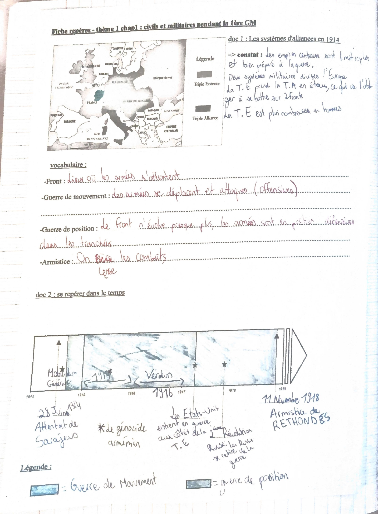
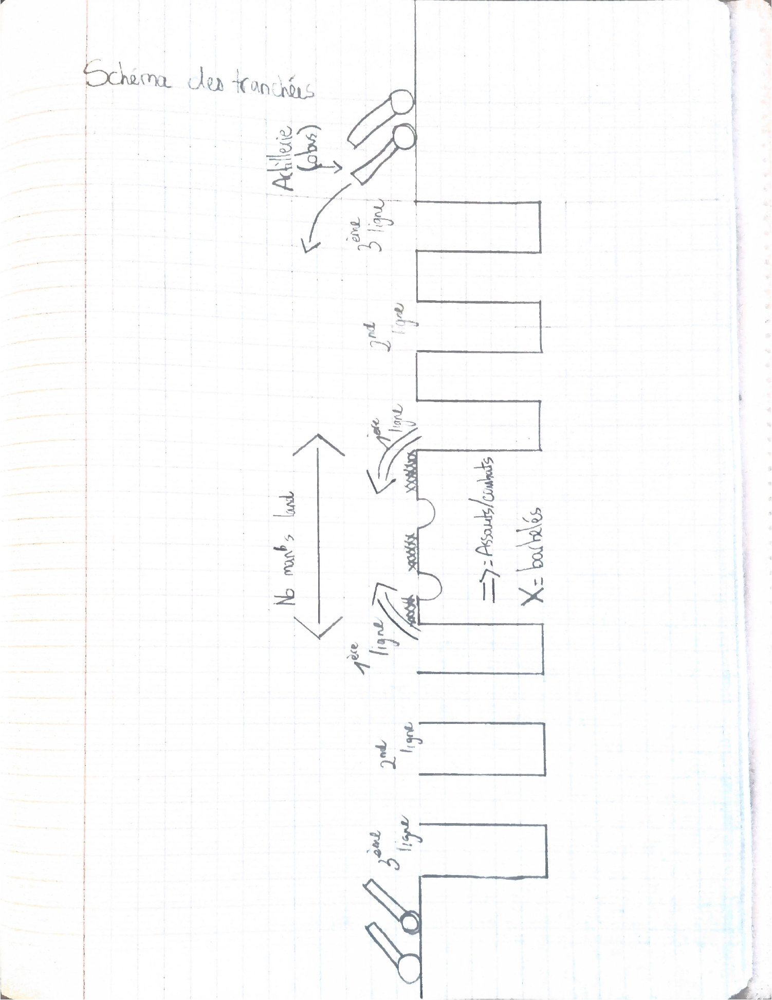
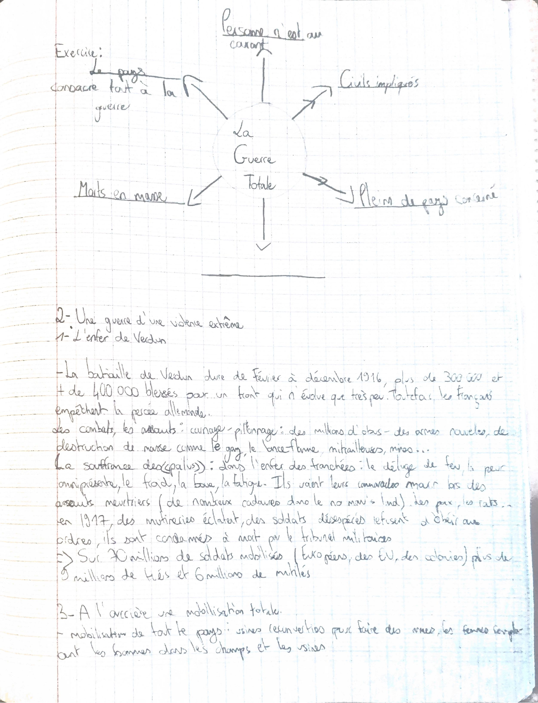
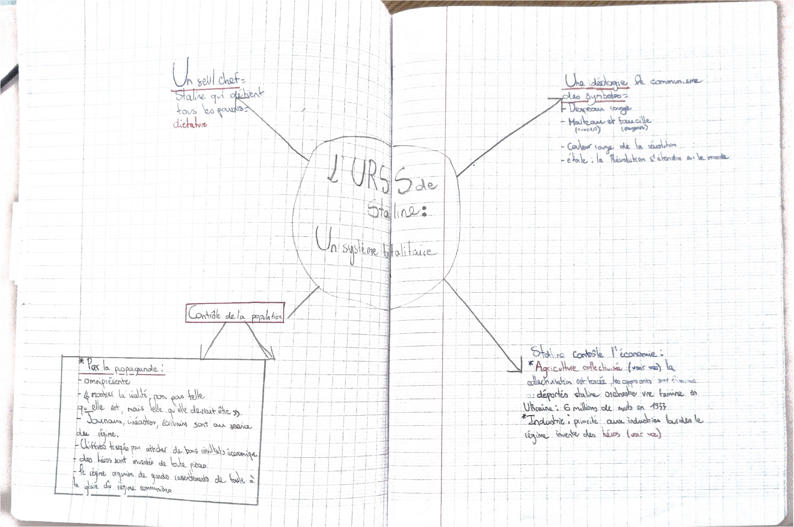
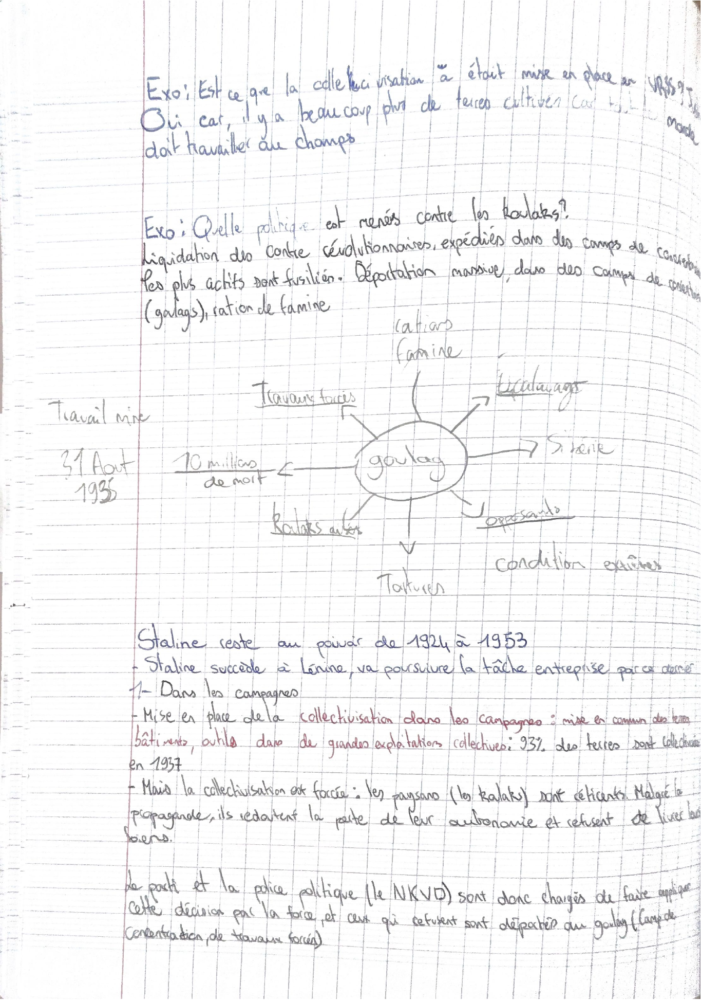

Thème 1, 1914-1945. Deux chapitres sont dans le cahier :
civils et militaires pendant la Première Guerre mondiale, puis l’URSS de Staline (1924-1953).
La lecture complète reprend le cours. La synthèse suit les dates.
L’extra va plus loin que le cahier, dans le même chapitre.
Frise de la couverture
Repères écrits sur la première page du cahier, complétés par les deux chapitres étudiés.
Découverte de l’Amérique. Repère de couverture, pas encore de leçon.
Révolution française. Repère de couverture, pas encore de leçon. Retouche : la couverture indique « 1792 » (proclamation de la République) ; la Révolution commence en 1789. À vérifier avec Ruben.
Première Guerre mondiale. Chapitre 1.
L’URSS de Staline. Chapitre 2.
Seconde Guerre mondiale. Annoncée sur la couverture, pas encore de leçon.
Chapitre 1, en dates
Compétence du cours : repères chronologiques et étude de documents.
Attentat de Sarajevo : l’héritier d’Autriche-Hongrie est assassiné par un Serbe. L’Autriche-Hongrie déclare la guerre à la Serbie, la Russie entre à son tour. Les alliances s’enchaînent.
Triple Entente : France, Royaume-Uni, Russie, rejoints ensuite par l’Italie, la Grèce, la Roumanie et le Portugal. Triple Alliance, les empires centraux : Autriche-Hongrie et Allemagne, rejoints par la Bulgarie et l’Empire ottoman. Guerre de mouvement, puis guerre de position.
Génocide des Arméniens dans l’Empire ottoman. 1,5 million de morts, environ les deux tiers de la communauté arménienne de Turquie.
Verdun. Plus de 300 000 morts et plus de 400 000 blessés. Le front bouge très peu. Les Français empêchent la percée allemande.
Mutineries. Les États-Unis entrent aux côtés de la Triple Entente. Février : le tsar abdique. 24-25 octobre : les bolcheviks, menés par Lénine et Trotski, prennent le pouvoir. La Russie quitte la guerre.
Armistice de Rethondes. On cesse les combats.
Traité de Versailles. L’Allemagne est jugée responsable, paie, perd des territoires et des colonies, et se voit privée de sa puissance militaire. Le cours parle d’une paix fragile et humiliante.
À retenir
Deux alliances se font face. Les empires centraux sont limitrophes. L’Entente les prend en étau : ils doivent se battre sur deux fronts. L’Entente est plus nombreuse.
De nouvelles armes tuent en masse : obus, mitrailleuses, gaz, chars, lance-flammes. C’est une violence de masse, puis une guerre totale : le pays, les civils et de nombreux États sont pris dans la guerre.
À l’arrière, usines d’armement, femmes au travail, censure, pénurie, inflation. Dans le Nord et en Belgique, l’occupation pèse sur les habitants.
Bilan noté en fin de chapitre : environ 10 millions de morts, des millions de mutilés, des veuves, des orphelins, des dégâts matériels, la pénurie et l’inflation.
Chapitre 2, en dates : l’URSS de Staline
URSS : Union des républiques socialistes soviétiques. Compétences : carte mentale, langage oral et écrit, analyse de documents de propagande.
Ouvriers et paysans se soulèvent : le tsar abdique.
Les bolcheviks de Lénine et Trotski prennent le pouvoir. Lénine signe une paix séparée avec l’Allemagne et abolit la propriété privée : guerre civile.
Lénine meurt. Staline lui succède et poursuit sa tâche.
Famine en Ukraine, orchestrée par Staline : 6 millions de morts d’après le cours.
L’ouvrier Stakhanov bat un record de production à la mine. Le régime en fait un héros.
93 % des terres sont collectivisées. La collectivisation est forcée : les koulaks qui refusent sont déportés au goulag.
20 millions de déportés.
Fin du pouvoir de Staline (1924-1953).
À retenir : un système totalitaire
Un seul chef : Staline détient tous les pouvoirs. C’est une dictature.
Une idéologie, le communisme, et des symboles : drapeau rouge, couleur de la révolution ; marteau (les ouvriers) et faucille (les paysans) ; étoile, la révolution doit s’étendre au monde.
Le contrôle de la population par la propagande : omniprésente, elle montre la réalité « non pas telle qu’elle est, mais telle qu’elle devrait être ». Journaux, cinéastes et écrivains servent le régime. Chiffres truqués, héros inventés, grands rassemblements à la gloire du régime.
Le contrôle de la population par la terreur : le parti et la police politique, le NKVD, envoient au goulag ceux qui refusent.
Le contrôle de l’économie : agriculture collectivisée de force, priorité à l’industrie lourde. Le contrôle de l’économie est total.
Cahier · partie 1 · 1914
Les forces en présence
Triple Entente : France, Royaume-Uni et Russie. Après 1914, l’Italie, la Grèce, la Roumanie et le Portugal les rejoignent.
Triple Alliance, les puissances centrales : Empire austro-hongrois et Empire allemand. La Bulgarie et l’Empire ottoman les rejoignent ensuite.
Le 28 juin 1914, l’héritier du trône d’Autriche-Hongrie est assassiné par un Serbe. L’enchaînement des alliances suit : l’Autriche-Hongrie déclare la guerre à la Serbie, la Russie déclare la guerre à son tour.

Document 1 du cahier. Constat écrit à côté de la carte : les empires centraux sont limitrophes et préparés à la guerre. Deux systèmes militaires divisent l’Europe. L’Entente prend l’Alliance en étau, donc deux fronts. L’Entente a plus d’hommes.Exercice du cahier
Les armes, et le passage à la violence de masse
Ruben relève : fusils, canon, obus, baïonnette, couteau, grenades, gaz asphyxiant, mitrailleuse, chars, avions équipés de mitrailleuses, lance-flammes.
Phrase de conclusion du cahier : de nouvelles armes ont pour but de tuer le plus grand nombre de soldats ennemis. On entre dans la violence de masse.
Autre réponse, sur la violence des combats : sur les fronts, des obus tombent à la seconde, des assauts sont lancés, les soldats se font mitrailler, reçoivent des obus, avancent parfois à partir de sacs de sable. Ils sentent la mort. Ils sont terrorisés.
Schéma du cahier
Les tranchées
Le front n’évolue presque plus. Les armées sont en défense dans les tranchées : c’est la guerre de position. Avant cela, les armées se déplacent et attaquent : c’est la guerre de mouvement. La frise du cahier colore en clair la guerre de mouvement, en foncé la guerre de position.

Trois lignes de chaque côté, artillerie à l’arrière, no man’s land au milieu, barbelés marqués d’une croix, assauts au centre.Cahier · 1915
Le génocide arménien
En 1915 a lieu un génocide. Il est commis sur les populations arméniennes de l’Empire ottoman. Des civils arméniens sont regroupés, puis déportés dans le désert syrien. Ils meurent de faim, de soif, d’épuisement et de maladies. Le cours donne 1,5 million de morts, soit les deux tiers de la communauté arménienne de Turquie. La Turquie refuse de reconnaître ce génocide.
Réponse de Ruben à l’exercice : les victimes sont les Arméniens, les bourreaux sont le gouvernement turc. Il note parmi les méthodes les violences, les marches forcées, la faim et la soif.
Génocide. Destruction, en partie ou en totalité, d’un peuple pour des raisons ethniques, raciales ou religieuses. Cela suppose une planification.
Cahier · partie 2 · 1916-1917
L’enfer de Verdun
Fév. – déc. 1916Durée de la bataille
+ de 300 000morts, d’après le cours
+ de 400 000blessés
Un front qui n’évolue que très peu. Pourtant les Français empêchent la percée allemande.
La souffrance des poilus : déluge de feu, peur, froid, boue, poux, fatigue. Des camarades meurent dans des assauts meurtriers. Des cadavres restent dans le no man’s land. Il y a le gaz et les rats.
En 1917, des mutineries éclatent. Des soldats désespérés refusent d’obéir aux ordres. Ils sont condamnés à mort par le tribunal militaire. Dans l’exercice, Ruben écrit qu’ils en ont marre de la guerre et qu’ils se soulèvent pour la quitter.
Le cours donne aussi un bilan plus large de la mobilisation : environ 70 millions de soldats mobilisés, Européens, Américains et soldats des colonies, plus de 9 millions de tués et 6 millions de mutilés. La fin du chapitre arrondit le bilan à 10 millions de morts.
Cahier · partie 3
À l’arrière, une mobilisation totale

Schéma « la guerre totale ». Branches lisibles : le pays consacre tout à la guerre, les civils sont impliqués, de nombreux pays sont concernés, les morts sont en masse.
Mobilisation de tout le pays. Des usines sont reconverties pour faire des armes. Les femmes remplacent les hommes dans les champs et les usines.
Les lettres des poilus sont censurées.
Les civils connaissent la pénurie et l’inflation.
En Belgique et dans le Nord de la France, les habitants supportent le poids de l’occupation : travail forcé, réquisitions.
Cahier · partie 5 · 1917-1918
Le bouleversement à l’Est, puis en Europe
Février 1917 : un mouvement révolutionnaire, ouvriers et paysans, conduit le tsar à abdiquer. Ruben note aussi les échecs militaires de la Russie.
24 et 25 octobre 1917 : les bolcheviks, parti social-communiste fondé par Lénine, dirigés par Lénine et Trotski, prennent le pouvoir.
Décisions de Lénine notées ensuite : paix séparée avec l’Allemagne, abolition de la propriété privée, guerre civile.
En Europe : vague de grèves. Certains mouvements s’inspirent du modèle russe, comme les spartakistes en Allemagne. Ces mouvements échouent.
1917, sur la frise : les États-Unis entrent en guerre aux côtés de la Triple Entente.
11 novembre 1918 : armistice de Rethondes.
Cahier · partie 6 · juin 1919
Une paix fragile
Paix officielle, extraite du traité de Versailles, juin 1919.
L’Allemagne rend l’Alsace-Lorraine à la France, prise en 1870 par la Prusse.
Elle cède une bande au sud du Danemark, toutes ses colonies, et un territoire à l’est donné à la Pologne : le couloir de Dantzig, qui coupe l’Allemagne en deux.
Elle est privée de sa puissance militaire. La Rhénanie, le long du Rhin, est occupée.
Elle est jugée responsable de la guerre et doit payer 132 milliards de marks.
Le cours dit qu’elle est vue comme un « géant enchaîné » par les articles du traité, jugés ignominieux et accablants. C’est une paix humiliante, le Diktat, selon les Allemands qui n’ont pas pu participer aux négociations.
D’autres traités démembrent ensuite les empires centraux.
Réponse de Ruben à l’exercice sur l’Allemagne : elle doit faire la paix avec la France, payer, elle est tenue pour la cause du début de la guerre, elle perd des colonies et des territoires, son économie est en désordre.
Bilan du chapitre : 10 millions de morts, des millions de mutilés, des veuves, des orphelins, des dégâts matériels importants, pénurie et inflation.
Vocabulaire du chapitre
Front
Lieu où les armées s’affrontent.
Guerre de mouvement
Les armées se déplacent et attaquent. Ce sont des offensives.
Guerre de position
Le front n’évolue presque plus. Les armées sont en position défensive dans les tranchées.
Armistice
On cesse les combats.
Pénurie
Manque.
Inflation
Très forte hausse des prix.
Réquisition
Ordre qui oblige à fournir un service ou un bien matériel.
Génocide
Destruction en partie ou en totalité d’un peuple, pour des raisons ethniques, raciales ou religieuses. Suppose une planification.
Chapitre 2 · introduction
L’URSS de Staline (1924-1953)
URSS : Union des républiques socialistes soviétiques.
Compétences : pratiquer différents langages (élaboration de carte mentale, langage oral et écrit) ; analyser des documents de propagande.
Le bouleversement à l’Est
Février 1917 : un mouvement révolutionnaire, ouvriers et paysans, conduit le tsar à abdiquer.
24 et 25 octobre 1917 : les bolcheviks, parti social-communiste fondé par Lénine, dirigés par Lénine et Trotski, s’emparent du pouvoir.
Aussitôt, deux mesures sont prises par Lénine : la signature d’une paix séparée avec l’Allemagne, et l’abolition de la propriété privée, qui mène à la guerre civile.
Lénine meurt en 1924. Staline prend alors le pouvoir et le garde de 1924 à 1953. Il succède à Lénine et va poursuivre la tâche entreprise par ce dernier.
Carte mentale du cahier
L’URSS de Staline : un système totalitaire

Carte mentale sur une double page. Quatre branches autour du titre : un seul chef, une idéologie, le contrôle de la population, le contrôle de l’économie.
Un seul chef : Staline, qui détient tous les pouvoirs. C’est une dictature.
Une idéologie, le communisme, et des symboles :
le drapeau rouge, couleur de la révolution ;
le marteau (les ouvriers) et la faucille (les paysans) ;
l’étoile : la révolution doit s’étendre au monde.
Le contrôle de la population, par la propagande :
elle est omniprésente ;
elle veut « montrer la réalité, non pas telle qu’elle est, mais telle qu’elle devrait être » ;
journaux, cinéastes et écrivains sont au service du régime ;
les chiffres sont truqués pour afficher de bons résultats économiques ;
des héros sont inventés de toutes pièces ;
le régime organise de grands rassemblements de foule à la gloire du régime communiste.
Staline contrôle l’économie :
agriculture collectivisée (voir vocabulaire) : la collectivisation est forcée, les opposants sont éliminés ou déportés. Staline orchestre une famine en Ukraine : 6 millions de morts en 1933 ;
industrie : priorité aux industries lourdes, le régime invente des héros (voir vocabulaire).
Les mots en rouge sont écrits en rouge dans le cahier. Le « voir voc » renvoie à un vocabulaire qui n’est pas encore dans les pages numérisées.
Cahier · 1. Dans les campagnes
La collectivisation forcée
Mise en place de la collectivisation dans les campagnes : mise en commun des terres, des bâtiments et des outils dans de grandes exploitations collectives. 93 % des terres sont collectivisées en 1937.
Mais la collectivisation est forcée. Les paysans, les koulaks, sont réticents. Malgré la propagande, ils redoutent la perte de leur autonomie et refusent de livrer leurs biens.
Le parti et la police politique, le NKVD, sont donc chargés de faire appliquer cette décision par la force. Ceux qui refusent sont déportés au goulag, camp de concentration et de travaux forcés.
Bilan : une famine (6 millions de morts) et 20 millions de déportés entre 1929 et 1953.
93 %des terres collectivisées en 1937
6 millionsde morts de la famine, d’après le cours
20 millionsde déportés entre 1929 et 1953
Exercices du cahier
Collectivisation et koulaks
Exercice : la collectivisation a-t-elle été mise en place en URSS ?(fin de la question en partie illisible sur le scan)
Réponse de Ruben : oui, car il y a beaucoup plus de terres cultivées, car tout le monde doit travailler aux champs.
Retouche douteuse : la réponse dit que la collectivisation donne plus de terres cultivées. Le cours, lui, insiste sur la contrainte, la famine et les déportations. À revoir avec Ruben ou avec la correction de la classe.
Exercice : quelle politique est menée contre les koulaks ?
Réponse de Ruben : liquidation des contre-révolutionnaires, expédiés dans des camps de concentration. Les plus actifs sont fusillés. Déportation massive dans des camps de concentration (goulags), ration de famine.
Schéma du cahier
Le goulag

Schéma en étoile autour du mot « goulag », au crayon, au milieu de la page.
Branches du schéma : travaux forcés, rations de famine, esclavage, Sibérie, opposants, conditions extrêmes, tortures, koulaks arrêtés, 10 millions de morts.
Retouche douteuse : « 10 millions de morts » est écrit sur le schéma. Les historiens comptent plutôt environ 18 millions de personnes passées par le goulag et 1,5 à 2 millions de morts dans les camps. À vérifier avec le cours de Mme Grillon. La lecture de « esclavage » et de « rations » est incertaine sur le scan.
Cahier · 2. Dans l’industrie
Priorité à l’industrie, et un héros : Stakhanov
Priorité à l’industrie lourde. Les chiffres sont truqués.
On invente des héros, comme l’ouvrier Stakhanov, qui a battu un record de productivité. Note en marge du cahier : travail à la mine, 31 août 1935.
Conclusion du cours, en rouge : le contrôle de l’économie est total.
Vocabulaire du chapitre 2
URSS
Union des républiques socialistes soviétiques.
Dictature
Un seul chef détient tous les pouvoirs.
Collectivisation
Mise en commun des terres, des bâtiments et des outils dans de grandes exploitations collectives.
Koulaks
Paysans réticents à la collectivisation, qui refusent de livrer leurs biens.
NKVD
La police politique, chargée avec le parti d’imposer la collectivisation par la force.
Goulag
Camp de concentration et de travaux forcés où sont déportés ceux qui refusent.
Propagande
Montrer la réalité non pas telle qu’elle est, mais telle qu’elle devrait être. Elle est omniprésente.
Le cahier ne donne pas de définition formelle de « propagande » ni de « koulak » : ces deux définitions reprennent les phrases du cours.
Cette partie n’est pas dans le cahier de Ruben. Ce sont des connaissances ajoutées, dans le périmètre du chapitre, pour aller plus loin. Ce qui compte pour le contrôle reste le cours de Mme Grillon.
Extra · avant la guerre
Pourquoi l’Europe s’embrase
Les grandes puissances sont rivales : pour les colonies, pour l’industrie, et par une course aux armements.
Les Balkans sont surnommés la « poudrière de l’Europe » : les nationalismes y sont très forts, notamment celui des Serbes.
L’héritier assassiné à Sarajevo s’appelle l’archiduc François-Ferdinand. Son assassin est Gavrilo Princip, un jeune nationaliste serbe de Bosnie.
Début août 1914, l’Allemagne déclare la guerre à la Russie, puis à la France. Elle passe par la Belgique, pays neutre : le Royaume-Uni entre alors en guerre.
Extra · les grandes batailles
Du mouvement aux tranchées
Bataille de la Marne. Les Français et les Britanniques arrêtent l’avancée allemande près de Paris. Les deux armées essaient ensuite de se contourner vers le nord : c’est la « course à la mer ». Le front se fige de la mer du Nord à la Suisse.
Près d’Ypres, en Belgique, l’armée allemande utilise pour la première fois des gaz de combat à grande échelle.
Bataille de la Somme, offensive franco-britannique. Le 1er juillet 1916 reste le jour le plus meurtrier de l’histoire de l’armée britannique. Les premiers chars y apparaissent.
Offensive du Chemin des Dames, menée par le général Nivelle. C’est un échec sanglant qui déclenche les mutineries de mai-juin 1917.
Traité de Brest-Litovsk : la Russie bolchevique signe la paix séparée avec l’Allemagne.
Extra · nuances
Ce qu’on sait en plus
Mutineries : le général Pétain remplace Nivelle. Il réprime, mais améliore aussi les permissions et le ravitaillement. Plusieurs centaines de soldats sont condamnés à mort ; la plupart des peines sont commuées, une cinquantaine de soldats sont fusillés.
Les États-Unis entrent en guerre en avril 1917, en partie à cause de la guerre sous-marine allemande, qui coule aussi des navires américains.
La France fait venir des soldats de son empire colonial, par exemple les tirailleurs dits « sénégalais », venus de toute l’Afrique de l’Ouest. Des travailleurs coloniaux et chinois remplacent aussi les ouvriers partis au front.
Les ouvrières des usines d’obus sont appelées les « munitionnettes ».
Le génocide arménien commence le 24 avril 1915 par l’arrestation des élites arméniennes à Constantinople. Cette date sert aujourd’hui de jour de commémoration. La France l’a reconnu officiellement par une loi en 2001.
Extra · après la guerre
Les traces de la guerre
Les soldats défigurés sont appelés les « gueules cassées ».
Presque chaque commune de France élève un monument aux morts. Un soldat inconnu est inhumé sous l’Arc de Triomphe à Paris, en 1921.
Une épidémie de grippe, dite « espagnole », tue des dizaines de millions de personnes dans le monde en 1918-1919.
Le président américain Wilson propose la Société des Nations (SDN), créée en 1920 pour préserver la paix. Les États-Unis n’y entrent pas.
Les autres traités démembrent l’Autriche-Hongrie et l’Empire ottoman. De nouveaux États apparaissent, comme la Pologne, la Tchécoslovaquie et le royaume des Serbes, Croates et Slovènes, future Yougoslavie.
Extra · chapitre 2 · la prise du pouvoir
Comment Staline s’impose
Le tsar qui abdique en 1917 est Nicolas II. La paix séparée avec l’Allemagne est le traité de Brest-Litovsk, en mars 1918. La guerre civile entre « Rouges » (bolcheviks) et « Blancs » dure jusqu’en 1921.
L’URSS est fondée officiellement en décembre 1922.
Lénine meurt en janvier 1924. Staline, secrétaire général du parti communiste, élimine peu à peu ses rivaux. Vers 1927-1929, il est seul maître du pouvoir. Trotski est exclu, exilé en 1929, puis assassiné au Mexique en 1940 sur ordre de Staline.
Staline meurt le 5 mars 1953.
Extra · chapitre 2 · l’économie
Plans, kolkhozes et stakhanovisme
À partir de 1928, l’économie suit des plans quinquennaux (sur cinq ans), fixés par l’État : c’est une économie planifiée.
Les exploitations collectives s’appellent les kolkhozes (coopératives) et les sovkhozes (fermes d’État). Staline annonce en 1929 la « liquidation des koulaks en tant que classe » : c’est la dékoulakisation.
La production agricole s’effondre au début des années 1930 : les paysans abattent leur bétail plutôt que de le donner, et l’État réquisitionne les récoltes.
La famine de 1932-1933 en Ukraine est appelée Holodomor, « extermination par la faim ». Les estimations vont d’environ 3,5 à 5 millions de morts en Ukraine, et 6 à 7 millions pour toute l’URSS.
Dans la nuit du 30 au 31 août 1935, le mineur Alexeï Stakhanov extrait 102 tonnes de charbon en moins de six heures, environ quatorze fois la norme. Le régime lance le « stakhanovisme » : les ouvriers doivent l’imiter.
Extra · chapitre 2 · la terreur
Purges, culte et goulag
En 1936-1938, la Grande Terreur : procès truqués de Moscou contre d’anciens dirigeants, purges dans le parti et l’armée. Environ 700 000 personnes sont exécutées en deux ans.
Le culte de la personnalité : Staline est présenté comme le « petit père des peuples », génial et infaillible. Sur les photos officielles, on efface les dirigeants tombés en disgrâce.
Le goulag est surtout installé dans des régions très froides et isolées : Sibérie, Grand Nord, Kolyma. Les détenus construisent des canaux, des voies ferrées, exploitent des mines.
L’écrivain Alexandre Soljenitsyne, ancien détenu, a fait connaître ce système au monde dans L’Archipel du Goulag (1973).
Les historiens parlent de totalitarisme pour l’URSS de Staline, l’Italie de Mussolini et l’Allemagne de Hitler : un parti unique, un chef, une idéologie, la propagande et la terreur pour contrôler toute la société.
Quiz
10 questions tirées au hasard parmi . Chaque tirage change les questions et l’ordre des réponses.